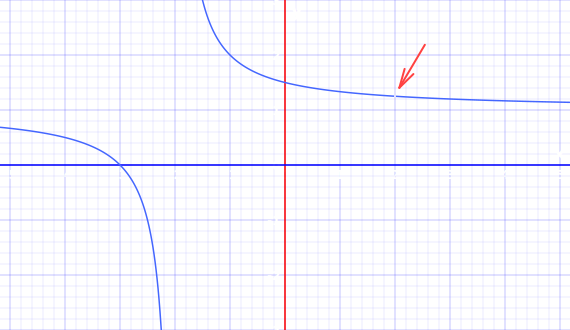

L'Hôpital's Rule
L'Hôpital's Rule can help us calculate a limit that may otherwise be hard or impossible.
L'Hôpital is pronounced "lopital". He was a French mathematician from the 1600s.
It says that the limit when we divide one function by another is the same after we take the derivative of each function (with some special conditions shown later).
In symbols we can write:
limx→cf(x)g(x) = limx→cf’(x)g’(x)
The limit as x approaches c of "f-of−x over g-of−x" equals the
the limit as x approaches c of "f-dash-of−x over g-dash-of−x"
All we did is add that little dash mark ’ on each function, which means to take the derivative.
Example:
limx→2x2+x−6x2−4
At x=2 we would normally get:
22+2−622−4 = 00
Which is indeterminate, so we are stuck. Or are we?
Let's try L'Hôpital!
Differentiate both top and bottom (see Derivative Rules):
limx→2x2+x−6x2−4 = limx→22x+1−02x−0
Now we just substitute x=2 to get our answer:
limx→22x+1−02x−0 = 54
Here is the graph, notice the "hole" at x=2:

Note: we can also get this answer by factoring, see Evaluating Limits.
Example:
limx→∞exx2
Normally this is the result:
limx→∞exx2 = ∞∞
Both head to infinity. Which is indeterminate.
But let's differentiate both top and bottom (note that the derivative of ex is ex):
limx→∞exx2 = limx→∞ex2x
Hmmm, still not solved, both tending towards infinity. But we can use it again:
limx→∞exx2 = limx→∞ex2x = limx→∞ex2
Now we have:
limx→∞ex2 = ∞
It has shown us that ex grows much faster than x2.
Cases
We have already seen a 00 and ∞∞ example. Here are all the indeterminate forms that L'Hopital's Rule may be able to help with:
00 ∞∞ 0×∞ 1∞ 00 ∞0 ∞−∞
Conditions
Differentiable
For a limit approaching c, the original functions must be differentiable either side of c, but not necessarily at c.
Likewise g’(x) is not equal to zero either side of c.
The Limit Must Exist
This limit must exist:limx→cf’(x)g’(x)
Why? Well a good example is functions that never settle to a value.
Example:
limx→∞x+cos(x)x
Which is a ∞∞ case. Let's differentiate top and bottom:
limx→∞1−sin(x)1
And because it just wiggles up and down it never approaches any value.
So that new limit does not exist!
And so L'Hôpital's Rule is not usable in this case.
BUT we can do this:
limx→∞x+cos(x)x = limx→∞(1 + cos(x)x)
As x goes to infinity then cos(x)x tends to between −1∞ and +1∞, and both tend to zero.
And we are left with just the "1", so:
limx→∞x+cos(x)x = limx→∞(1 + cos(x)x) = 1